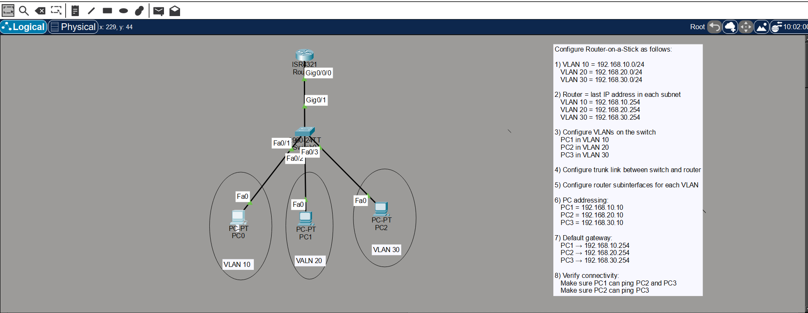
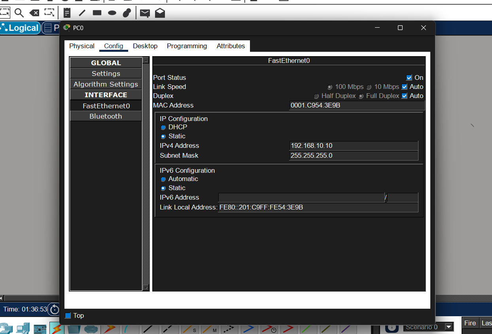
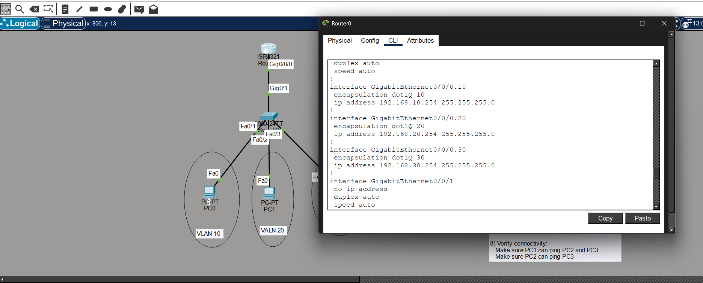
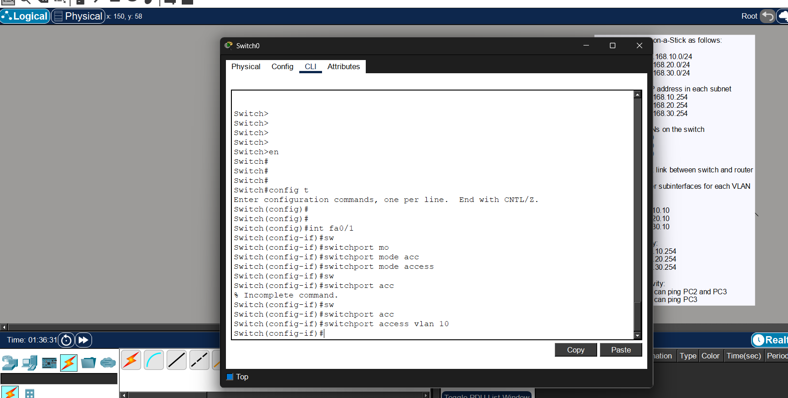
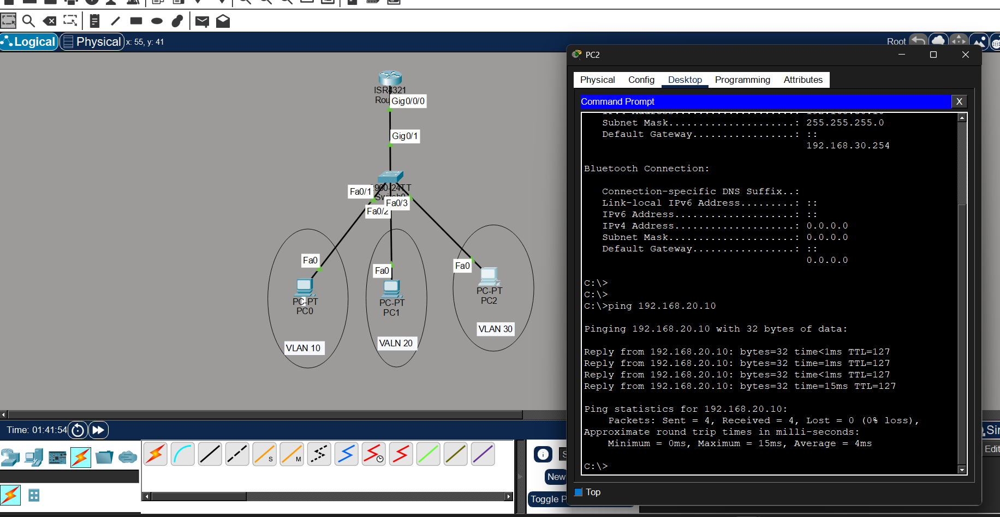

Router-on-a-Stick (ROAS) is a networking technique used to enable communication between multiple VLANs using a single physical router interface.
It is called "stick" because only one physical cable connects the router to the switch while carrying traffic from multiple VLANs.
The switch port connected to the router must be configured as a trunk port.
switchport mode trunk
This trunk link allows multiple VLANs to pass through the same physical connection.
Instead of using multiple physical interfaces, the router creates logical interfaces called subinterfaces. Each subinterface represents a specific VLAN.
interface g0/0.10 encapsulation dot1Q 10 ip address 192.168.10.1 255.255.255.0 interface g0/0.20 encapsulation dot1Q 20 ip address 192.168.20.1 255.255.255.0
By default:
To enable communication between different VLANs, we need Inter-VLAN Routing. Router-on-a-Stick is one method used to achieve this.
Configure Router-on-a-Stick to allow communication between multiple VLANs.
| VLAN | Network | Gateway |
|---|---|---|
| VLAN 10 | 192.168.10.0/24 | 192.168.10.254 |
| VLAN 20 | 192.168.20.0/24 | 192.168.20.254 |
| VLAN 30 | 192.168.30.0/24 | 192.168.30.254 |
Verify the network configuration using the following steps:




